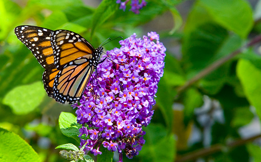
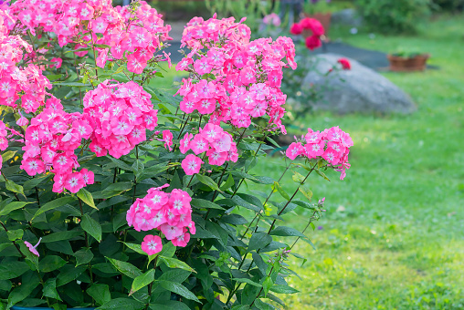
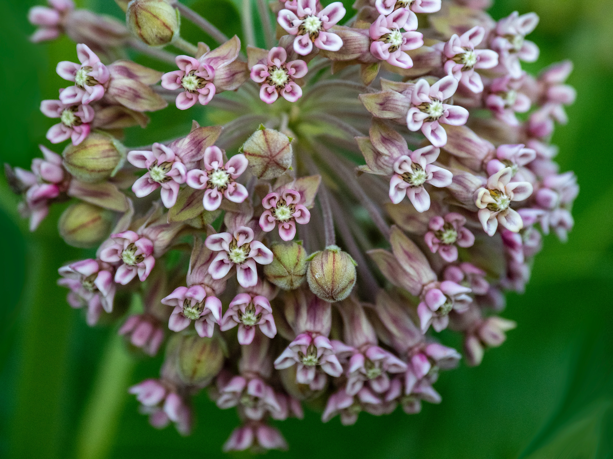
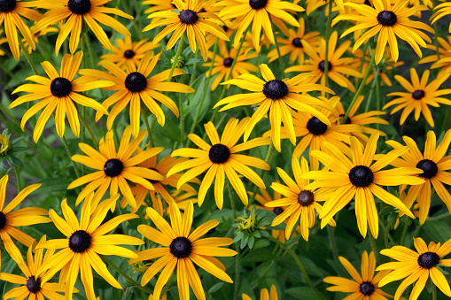

| Butterfly Bush | Plox | Milkweed | Black-eyed Susan |
|---|---|---|---|
|  |  |  |  |
|
Butterfly bushes (Buddleia or Buddleja) are large, fast-growing shrubs whose flowers are irresistible to butterflies. Buddleias are easy-care plants, but they’re invasive in some areas. |
Phlox is a low growing, spreading plant that forms a blanket of blooms all summer. Perennial varieties are great for a year-round groundcover. |
The only food source of Monarch caterpillars and a preferred source of nectar for many butterfly species, including the adult Monarch, there are over 100 varieties of milkweeds in North America. |
Black-eyed Susan is one of the great wildflowers of North America and was one of the first to become a domesticated garden flower. Its showy golden yellow flower head with black centers is a visual delight. |